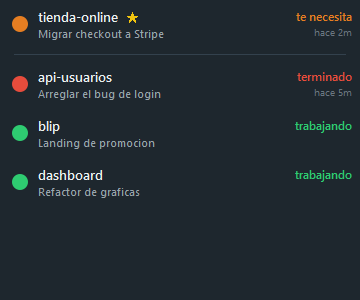

Blip vigila todas tus sesiones de Claude Code y te avisa con un semáforo cuando alguna te hace una pregunta o termina de trabajar.
Gratis · Windows · sin instalación

Cada sesión tiene una luz. El color te dice si puedes seguir a lo tuyo o si toca volver al teclado.
Claude está ejecutando algo. No necesita nada de ti; sigue con lo tuyo.
Te hizo una pregunta, espera un permiso o un plan por aprobar. Es tu turno.
Acabó su turno y espera tu siguiente instrucción para continuar.
Blip se apoya en los hooks de Claude Code: no lee tu pantalla ni tu código, solo escucha los eventos de cada sesión.
Un pequeño hook salta en cada evento de la sesión (inicio, pregunta, fin) y anota su estado.
El estado se guarda en ~/.claude/blip/, un fichero por sesión. Nada sale de tu equipo.
La ventana de Blip, siempre visible, muestra la luz de cada sesión y cambia en tiempo real.
Cuando trabajas con Claude en varias terminales, Blip te ayuda a no perder ninguna de vista.
La ventana se mantiene sobre las demás; solo se minimiza.
Fija tus sesiones importantes en la parte superior con doble clic.
Las que reclaman tu atención suben automáticamente al principio.
El icono de la barra de tareas se tiñe del estado más urgente.
Cuando cierras una terminal, su sesión desaparece de la lista.
Muestra el tiempo desde que una sesión te reclama.
Un único ejecutable. Ábrelo y empieza a ver tus sesiones al instante.
Descargar Blip.exeWindows 10/11 · última versión en GitHub Releases